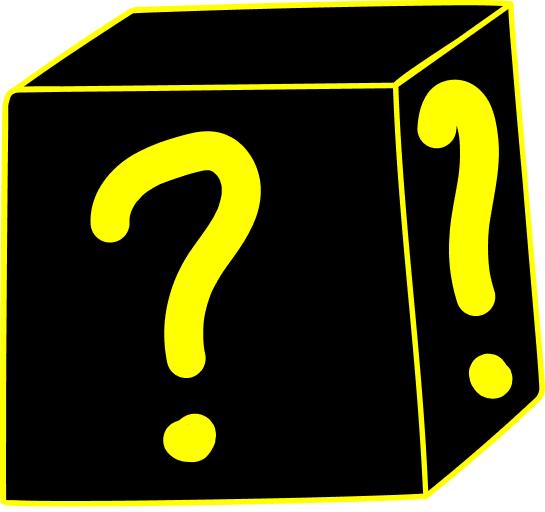

Что здесь будет?
В скором времени здесь будут какие-нибудь генераторы.
"Короче, Рандом - это случайное число, которое генерирует генератор случайных чисел"
А можно как-нибудь по конкретнее?
Ну типо здесь можно будет нажать на кнопку и получить что-нибудь рандомное.
Да кто такой этот ваш рандом вообще?
"Генерация случайных чисел — процесс, который с помощью устройства генерирует последовательность чисел или символов, которая может быть предсказана разумным образом только на основании случайности. Генераторы случайных чисел подразделяются на «аппаратные генераторы случайных чисел» (HRNGS), которые генерируют случайные числа в зависимости от текущего значения какого-либо атрибута физической среды, который практически невозможно смоделировать при текущем уровне знаний, и генераторы псевдослучайных чисел (PRNGS), которые генерируют числа, которые выглядят случайными, но на самом деле являются детерминированными и могут быть воспроизведены, если известна модель (шаблон), на основании которой работает генератор псевдослучайных чисел"
Вот это и есть рандом.
В основном это не создание чего-либо нового, как делают нейронные сети, а либо выбор из списка либо соединение нескольких элементов из разных списков в соответсвии с алгоритмом
- -a
- -b
-
- -a
- -b
- Термин 1
- Описание термина 1
- Термин 1
- Описание термина 1
- Термин 1
- Описание термина 1
- Термин 1
- Описание термина 1
- Термин 1
- Описание термина 1

